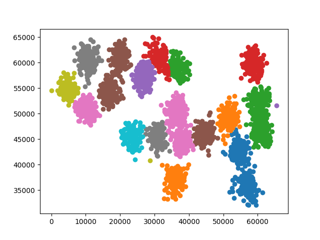

Felzenswalb Gruplaması (Felzenswalb Clustering)
Minimum Kapsayan Ağaç (Minimum Spanning Tree -MST-) kavramını kullanan Felzenswalb kümelemesini göreceğiz. MST'yi daha önce işledik. Literatürde Felzenswalb metotunun imaj gruplaması için kullanıldığı görülebilir, biz imaj gruplaması yapan algoritma içinden veri kümelemesi yapan kısmı çıkarttık ve ayrı bir şekilde paylaşıyoruz. Bu gruplama algoritmasının daha önce paylaştığımız Kruskal'ın MST koduna yapılacak birkaç ekleme sayesinde elde edilebilmesi hakikaten ilginç. Normal MST çizitin ayrı bölgelerinde ayrı ağaçlar yaratır ve bunları yavaş yavaş büyütür, gerektiği noktalarda onları birleştirir. Felzenswalb sadece bu birleştirme mantığını biraz değiştirip, ayrı ağaçları bir grup olarak kabul eder, ve bu grupların kendi içinde benzerliği maksimal, gruplararası benzerliği minimal olacak hale getirir. Bu şekilde bildik Kruskal işletilince çok hızlı işleyen hızlı bir gruplama algoritması elde edilmiş olur!
Felzenswalb veri olarak, MST gibi, bir çizit alır ve bu çizit veri noktalarının arasındaki yakınlık bilgisini içeren bir matris olarak verilebilir. Mesela 5 veri noktası var ise, 0. nokta ile 1. nokta arasındaki '10' büyüklüğündeki bir mesafe $A(0,1) = 10$ olarak kaydedilebilir. Kümeler birbirine yakın öğeler arasından seçilir.
Algoritmanın önemli avantajlarından biri küme sayısının (GMM'de olduğu gibi) önceden tanımlanmasına gerek olmamasıdır. Belli eşik değerleri tanımlanınca küme sayısı kendiliğinden bulunur. Tabii "dışarıdan verilen bir parametreyi başka biriyle değiştirmiş mi olduk?" sorusu akla gelebilir, Felzenswalb'ın aldığı hiperparametreler kabaca ayarlanabilen ve veri kaynağı bağlamında akla uygun şeyler, ve belli değerler etrafında stabilite ortaya çıkabiliyor. Kıyasla "küme sayısı" ciddi bir rakam ve değişmesi mümkün değil.
Felzenswalb'ın matematiğinde önce imaj bölgelerinin (ya da veri kümeleri olarak düşünebiliriz) arasında ikili karşılaştırma için bir ölçüt gerekir. Bu bölümde bir beyan $D$'yi ortaya koyacağız, ki bu beyan, imajdaki iki bileşen (ki imaj gruplamasının doğru olarak bulmaya çalışacağı bileşenler) arasında bir sınır olup olmadığına dair kanıtın ölçüsü olacak. Beyanın temeli şudur: iki bileşen arasındaki sınırın boyunda yer alan her iki tarafın öğelerinin farklılığına bak, ve onu her bileşenin kendi içindeki farklılığa göre oranla. Yani bu beyan, bir bileşenin iç farklılığını dış farklılığına kıyaslar, ve bu sebeple verinin yerel karakteristikleri gözetmiş olur. Kıyaslama mesela, global, verinin her yerinde aynen geçerli olacak bir sabit eşik değerine vs. bağlı değildir.
Tanım
Bir bileşen $C \subseteq V$, ki $C$ bir bileşendir (component) ve $V$ çizitin tüm noktalarıdır, iç farklılığını, o $C$'nin minimum kapsayan ağacının, yani $MST(C)$'sinin en büyük kenar ağırlığı olarak alıyoruz. Bu iç farklılığı $Int(C)$ olarak belirtirsek,
$$ Int(C) = \max_{e \in MST(C,E)} w(e) $$
ki $w((v_i , v_j))$ bir çizit $G = (V,E)$'yi oluşturan bir kenar $(v_i,v_j) \in E$ ağırlığı olarak belirtilir.
Tanım
İki bileşen $C_1,C_2 \subseteq V$ arasındaki farkı o iki bileşeni birleştiren kenarlardan en ufağı olarak alıyoruz. İki bileşenin arasında birden fazla bağlantı olması mümkündür, tüm bunlara bakıyoruz, ve en ufağını alıyoruz.
$$ Dif(C_1,C_2) = \min_{v_i \in C_1, v_j \in C_2, (v_i,v_j) \in E} w((v_i,v_j))$$
Eğer $C_1,C_2$ arasında bir kenar yok ise $Dif(C_1,C_2) = \infty$ kabul ediliyor.
Prensip olarak iki bileşen arasındaki en minimal bağlantının problem çıkartabileceği düşünülebilirdi, niye en az, niye ortalama vs değil? Pratikte bu ölçütün çok iyi işlediği görülmüştür. Hatta iyi olmaktan öte, bu ölçüt minimal yerine medyan, ya da diğer yüzdelik dilim (quantile) ölçütle değiştirildiği zaman (ki bunu yaparak genel algoritmanın aykırı değerlere -outlier- karşı daha dayanıklı olması istenmişti), algoritma çetrefilliği NP-Zor haline geliyor. Yani gruplama kriterinde ufacık bir değişiklik problemin çözüm zorluluğunda müthiş bir değişim ortaya çıkartıyor.
Şimdi iki bileşenin karşılaştırma beyanı $D$'nin tanımına geldik. $D$ ölçütü, $Dif(C_1,C_2)$'nin $Int(C_1)$ ya da $Int(C_2)$'den herhangi birinden daha büyük olup olmadığına bakar. Ayrıca bu karşılaştırmayı bir eşik değeri üzerinden pay ekleyerek yapar, eğer irdeleme olumlu ise, iki bileşen arasında sınır vardır, yoksa yoktur.
$$ D(C_1,C_2) = \left\{ \begin{array}{ll} \textrm{Doğru} & \textrm{ Eğer } Dif(C_1,C_2) > MInt(C_1,C_2) \textrm{ ise } \\ \textrm{Yanlış} & \textrm{ Diğer durumda } \end{array} \right. $$
Minimum iç fark $MInt$ ise şöyle tanımlıdır,
$$ MInt(C_1,C_2) = \min (Int(C_1)+\tau(C_1), Int(C_2)+\tau(C_2)) $$
Eşik fonksiyonu $\tau$ üstteki irdelediğimiz fark hesaplarının belli derecelerde dışarıdan etkilemek için koyulmuştur. Eğer bu kullanılmasaydı sadece $Int$ fonksiyonu kullanılması gerekecekti, fakat bu ölçüt tek başına ufak bir bileşenin yerel karakteristiklerini göstermesi açısından yeterli değildir. Aşırı durumda mesela $|C| = 1,Int(C)=0$, yani en küçük $C$ durumudur bu ($|C|$ bileşenin içindeki öğe sayısı), içinde tek öğe vardır, ve hiçbir kenar yoktur, $Int(C) = 0$.
Bu sebeple iyi bir $\tau$ bileşenin büyüklüğünü hesaba katarak, ona ters oranlı bir rakam oluşturursa iyi olur, mesela bir sabit $k$ üzerinden,
$$ \tau(C) = \frac{k}{|C|} $$
Bu demektir ki ufak bileşenler için daha kuvvetli bir ispat arıyoruz, çünkü küçük $|C|$, $\tau$'yu büyütecektir, ve $Dif$'in ondan büyük olması daha zorlaşacaktır. Tabii dikkat edelim, $k$ bir "bileşen sayısı" değildir, yani fonksiyona dikkatli bakarsak, eğer bileşenler arasında yeterince büyük bir fark var ise ufak bileşenlere hala izin verilmiştir.
Algoritma şöyledir, girdi olarak $G=(V,E)$ alır, ve $V$'yi $S$ bileşenlerine ayırır ki her $S$ içinde ona ait olan kenarlar vardır, yani $S=(C_1,..,C_r)$
felzenswalb$\left(G\right)$
- $E$ kenarlarını $\pi = (o_1,..,o_m)$ şeklinde küçükten büyüğe doğru sırala.
- İlk başta $S^0$ gruplamasını al. Bu durumda her kenar $v_i$ kendi bileşeni içindedir.
-
Her $q = 1,..,m$ icin
-
$S^{q-1}$ gruplamasını baz alıp $S^q$ gruplamasını şöyle yarat; $q$'inci sıradaki kenarın birleştirdiği noktaların $v_i,v_j$ olduğunu farz edelim, yani $o_q = (v_i,v_j)$.
-
Eğer $v_i,v_j$ $S^{q-1}$ gruplaması içinde farklı iki bileşen içindeyseler, ve $w(o_q)$ her iki bileşenin içsel farkına kıyasla çok küçük ise, bu iki bileşeni birleştir, yoksa hiçbir şey yapma.
-
return$S^m$
Üstteki döngü içindeki en son irdelemede içsel farktan bahsediliyor, bu tabii ki $MInt(C_1,C_2)$. Daha formel şekilde $MInt(C_1^{q-1},C_2^{q-1})$ çünkü bileşenlerin içerikleri hangi adımda olduğumuza göre değişebilir, $q$ adımında bir önceki $q-1$'den bize "miras kalan" gruplamalar ve bileşenler üzerinden iş yapıyoruz. Bir sonraki adıma ya birleşmiş, ya da birleşmemiş (aynı) gruplamaları aktarıyoruz.
Aynı algoritmanın biraz daha fazla formül içeren hali [3]
felzenswalb$\left(G\right)$
- Bütün kenarları küçükten büyüğe doğru sırala.
- İlk başta kenar $v_i$ kendi bileşeni içinde olsun, buna $S^0$ gruplaması diyelim.
-
Her tüm kenarlar $e_i = (v_1,v_2) \in E$ için
- $v_1 \in C_1$ ve $v_2 \in C_2$'nin birbirinden ayrı, ayrı bileşenler içinde ama aynı kenarı içeren noktalar olduğunu düşünelim,
if$w(e_i) \le MInt(C_1,C_2)$ ise, o zaman- $C_1$ ve $C_2$'yi birleştir
else- $S^i = S^{i-1}$
return
Felzenswalb gruplamasının Python ile yazılmış örneği alttadır, daha hızlı işleyen C++ bazlı kodu şurada [2] bulunabilir.
import scipy.sparse as sps
import scipy.io as io
import itertools, numpy as np
def threshold(size, c): return c / size
S = {}
def find(C, u):
if C[u] != u:
C[u] = find(C, C[u]) # Path compression
return C[u]
def union(C, R, u, v, S):
u, v = find(C, u), find(C, v)
if R[u] > R[v]: # Union by rank
C[v] = u
S[v] = S[u] = S[u] + S[v]
else:
C[u] = v
S[v] = S[u] = S[u] + S[v]
if R[u] == R[v]: # A tie: Move v up a level
R[v] += 1
class Felzenswalb:
def __init__(self, min_size, c):
self.min_size_ = min_size
self.c_ = c
def fit(self, X):
print X.shape
G = {}
for i in range(X.shape[0]): G[i] = {}
for u,v,w in itertools.izip(X.row, X.col, X.data): G[u][v] = w
E = [(G[u][v],u,v) for u in G for v in G[u]]
E = sorted(E)
T = set()
C, R = {u:u for u in G}, {u:0 for u in G} # Comp. reps and ranks
S = {u:1 for u in range(len(G))}
ts = {x:threshold(1,self.c_) for x in C}
for w, u, v in E:
if find(C, u) != find(C, v):
if w <= ts[u] and w <= ts[v]:
T.add((u, v))
union(C, R, u, v, S)
ts[u] = w + threshold(S[u],self.c_)
for _, u, v in E:
if find(C, u) != find(C, v):
if S[C[u]] < self.min_size_ or S[C[v]] < self.min_size_:
union(C, R, u, v, S)
self.labels_ = [np.nan for i in range(len(C))]
for i in range(len(C)): self.labels_[i] = int(C[i])
self.T_ = T
Basit bir örnek
import scipy.sparse as sps, felz
import scipy.io as io
X = io.mmread('simple.mtx')
clf = felz.Felzenswalb(min_size=1,c=1.0)
clf.fit(X)
print clf.labels_
(5, 5)
[1, 1, 3, 3, 1]
Biraz daha çetrefil bir örnek
import scipy.sparse as sps
import scipy.io as io, random
import pandas as pd, os, sys
syn = pd.read_csv("../kmeans/synthetic.txt",comment='#',names=['a','b'],sep=" ")
data = np.array(syn)
from sklearn.metrics.pairwise import euclidean_distances
X = euclidean_distances(data, data)
X2 = X.copy()
# filter out large values / distances so matrix can be sparse
X2[X > 2000] = 0.0
X3 = sps.lil_matrix(X2)
X4 = sps.triu(X3)
print 'non-zero items', len(X4.nonzero()[0])
print X4.shape
non-zero items 87010
(3000, 3000)
import felz
clf = felz.Felzenswalb(min_size=20,c=800)
clf.fit(X4)
(3000, 3000)
syn['cluster'] = clf.labels_
print len(syn['cluster'].unique()), 'clusters found'
print syn[:5]
19 clusters found
a b cluster
0 54620 43523 120
1 52694 42750 120
2 53253 43024 120
3 54925 42624 120
4 54973 43980 120
import random
for clust in syn['cluster'].unique():
tmp = np.array(syn[syn['cluster'] == clust][['a','b']])
plt.scatter(tmp[:,0], tmp[:,1], c=np.random.rand(3,1))
plt.savefig('mstseg_01.png')

Şimdi [4] yazısında gördüğümüz kelime gruplaması örneğini Felzenswalb ile gruplayalım.
import scipy.linalg as lin
import scipy.sparse as sps
import itertools, sys
sys.path.append('../svdcluster/')
import leven
words = np.array(
['the', 'be', 'to', 'of', 'and', 'a', 'in', 'that', 'have',
'I', 'it', 'for', 'not', 'on', 'with', 'he', 'as', 'you',
'do', 'at', 'this', 'but', 'his', 'by', 'from', 'they', 'we',
'say', 'her', 'she', 'or', 'an', 'will', 'my', 'one', 'all',
'would', 'there', 'their', 'what', 'so', 'up', 'out', 'if',
'about', 'who', 'get', 'which', 'go', 'me', 'when', 'make',
'can', 'like', 'time', 'no', 'just', 'him', 'know', 'take',
'people', 'into', 'year', 'your', 'good', 'some', 'could',
'them', 'see', 'other', 'than', 'then', 'now', 'look',
'only', 'come', 'its', 'over', 'think', 'also', 'back',
'after', 'use', 'two', 'how', 'our', 'work', 'first', 'well',
'way', 'even', 'new', 'want', 'because', 'any', 'these',
'give', 'day', 'most', 'us'])
(dim,) = words.shape
f = lambda (x,y): leven.levenshtein(x,y)
res=np.fromiter(itertools.imap(f, itertools.product(words, words)),dtype=np.uint8)
A = sps.coo_matrix(np.reshape(res,(dim,dim)))
print A.shape
(100, 100)
Kümelemeyi yapalım, min_size=2 seçtik çünkü ufak kümeler de mümkün.
import felz
clf = felz.Felzenswalb(min_size=1.5,c=0.2)
clf.fit(A)
labels = np.array(clf.labels_)
c = len(np.unique(labels))
print c, 'clusters found'
(100, 100)
16 clusters found
for c in np.unique(labels):
print 'cluster', c
print words[labels==c]
cluster 9
['a' 'I' 'as' 'at' 'up' 'also' 'use' 'because' 'us']
cluster 10
['in' 'it' 'with' 'which' 'its' 'first']
cluster 13
['of' 'for' 'on' 'from' 'or' 'one' 'if' 'people' 'only' 'after' 'our'
'work']
cluster 15
['the' 'be' 'have' 'he' 'by' 'they' 'we' 'her' 'she' 'my' 'their' 'who'
'get' 'me' 'when' 'time' 'year' 'them' 'see' 'other' 'then' 'over' 'back'
'even' 'give']
cluster 18
['to' 'not' 'do' 'so' 'go' 'no' 'know' 'into' 'good' 'now' 'look' 'two'
'how' 'new' 'most']
cluster 22
['this' 'his' 'him' 'think']
cluster 31
['and' 'an' 'all' 'can' 'want' 'any']
cluster 39
['that' 'what' 'than']
cluster 42
['but' 'out' 'about' 'just']
cluster 59
['make' 'like' 'take']
cluster 63
['you' 'your']
cluster 66
['would' 'could']
cluster 75
['some' 'come']
cluster 88
['will' 'well']
cluster 89
['say' 'way' 'day']
cluster 95
['there' 'these']
Kaynaklar
[1] Pedro F. Felzenszwalb and Daniel P. Huttenlocher, {\em Efficient Graph-Based Image Segmentation}, http://cs.brown.edu/~pff/segment/
[2] Github, https://github.com/burakbayramli/kod/felzenszwalb
[3] Mihai-Cotizo Sima, {\em An extension of Felzenszwalb-Huttenlocher segmentation to 3D point clouds}, 2012
[4] Bayramlı, Lineer Cebir, SVD ile Kümeleme
Yukarı